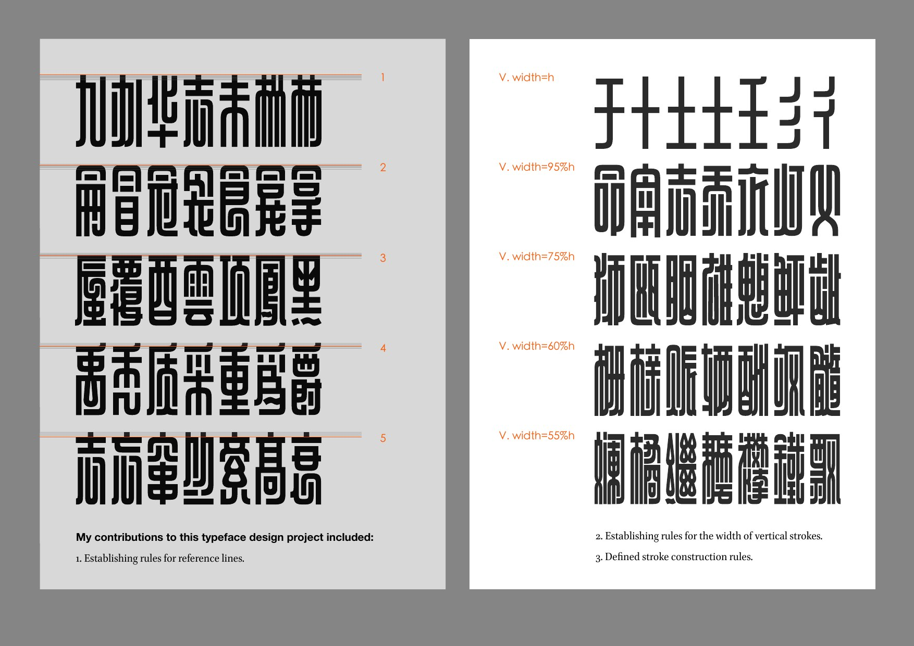
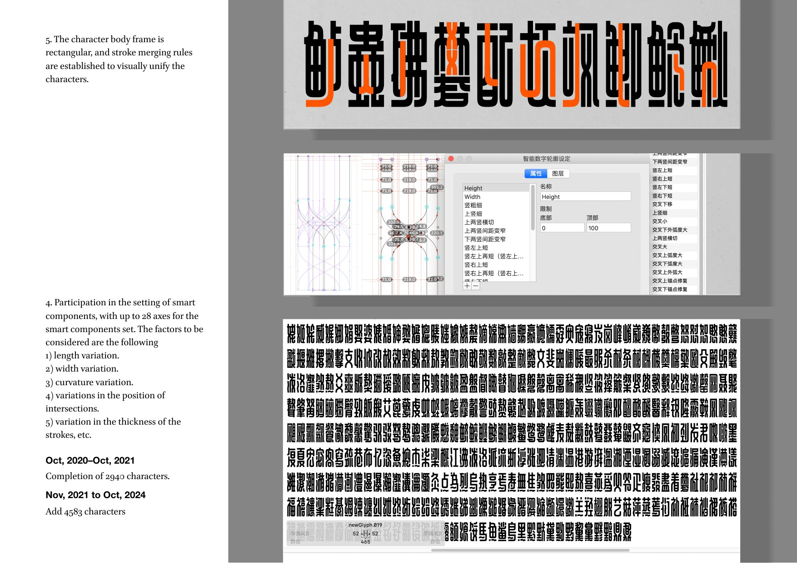

Tokyo TDC 70th Anniversary · Type revival
Shanghai Sky
A typeface revival and visual study based on historical Chinese lettering, exploring monumental forms, contrast, and urban graphic memory.



Tokyo TDC 70th Anniversary · Type revival
A typeface revival and visual study based on historical Chinese lettering, exploring monumental forms, contrast, and urban graphic memory.

